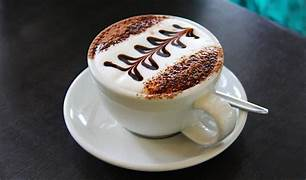

Welcome to Starbucks
Your favorite coffee, freshly brewed.
Learn more about the world of coffee!
Want to join us?
Join us as a Customer
Since 1971, Starbucks has been committed to serving exceptional coffee. What started as a single store in Seattle’s historic Pike Place Market has grown into a global coffee brand with over 30,000 locations worldwide. Starbucks is renowned for offering a wide variety of high-quality coffee, crafted beverages, and delicious food, all served in a welcoming atmosphere. At the heart of Starbucks is a passion for ethically sourcing and roasting the finest Arabica coffee beans. With a focus on sustainability and building relationships with farmers, Starbucks is dedicated to responsible business practices and creating positive impacts in communities worldwide. Whether you’re enjoying a handcrafted latte, a cold brew, or simply a cup of freshly brewed coffee, Starbucks aims to make every visit more than just a stop — it’s an experience. Join us at one of our stores, and discover the perfect blend of quality, flavor, and comfort that defines Starbucks.
Best Offers
Top-rated Company
Our Coffee
Espresso
Rich, full-bodied espresso with a caramel-like sweetness. Espresso is a concentrated type of coffee drink with Italian origins.

Cappuccino
Espresso with steamed milk and a light layer of foam. A cappuccino is the perfect blend of flavorful coffee and luxurious milk foam.
Latte
Espresso with steamed milk, topped with a light layer of foam. A latte is a milk coffee drink with espresso that boasts a silky layer of foam on top.